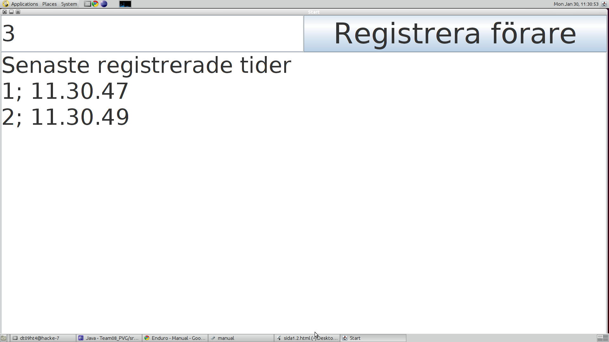
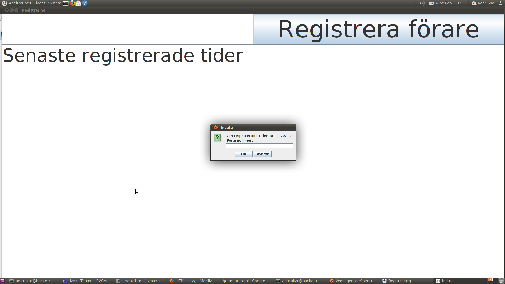

Enduro - Manual
1.0 Programinformation
1.1 Namnfil
1.2 Starta Registreringsprogrammet
1.3 Starta Resultatprogrammet
Utveckling
1.0 Programinformation
Program som ingår:
Registreringsprogram, Resultatprogram
Hur körs dom:
Registreringsprogrammet är grafiskt, medan Resultatprogrammet körs från terminalen.
Båda programmen är jar-filer. (För att starta en .jar fil behöver Java Runtime Environment vara installerad)
För att starta Registreringsprogrammet räcker det med att dubbelklicka på programmets ikon, medan du måste gå in i terminalen för att kunna öppna resultatprogrammet. Till Resultatprogrammet kan man antingen manuellt mata in parametrar i terminalfönstret eller använda sig av en tillhörande konfigurationsfil där man fyller i de parametrar man vill att programmet ska använda när det körs. Inga av filnamnen får innehålla bokstäverna å, ä eller ö. Mer information om detta finns under 1.3 Starta Resultatprogrammet
Återvänd till topp
1.1 Namnfil
Namnfilen måste skapas i förväg. I den bör förarnas startnummer, namn och klass finnas med (se exempel nedan)
Exempel på hur en namnfil bör se ut:
StartNr; Namn
SENIORER
1; Anders Asson
2; Berit Bsson
JUNIORER
3; Carin Csson
Startnummer som inte förekommer i namnfilen fast finns med i start och/eller målfil kommer att visas längst ner på resultatlistan som "Icke existerande startnummer".
1.2 Starta Registreringsprogrammet
Starta programmet genom att dubbelklicka på Main.jar-filen. Programmet ska se ut ungefär som bild 1.
Bild 1 - En bild på registreringsprogrammet

Enkelstart/Masstart
Enkelstart
Parametern Starttype i konfigurationsfilen ska i det här fallet vara given som Enkelstart.
Skriv in startnummret på föraren och tryck Registrera förare eller tryck enter. Tillåtna startnummer är alla tal större/lika med 0 (men om de inte finns med i namnfilen så kommer de stå som icke-existerande i resultatfilen). I bild 1 illusteras denna sortens registrering - förare 1 och 2 är registrerade och förare 3 är påväg att bli registrerad.
Om man vill spara tiden och skriva in förarens startnummer lite senare så trycker man på Registrera förare utan att skriva in något startnummer. Då kommer det upp en dialogruta där förarens nummer kan skrivas in (se bild 2 nedan), tiden från då Registrera förare-knappen trycktes lagras då i filen.
Bild 2 - En bild på registrering i efterhand

Masstart
Parametern Starttype i konfigurationsfilen ska i det här fallet vara given som Masstart.
Masstart fungerar på så sätt att man istället för startnummer anger hur många deltagare som startar och klickar på Registrera förare. Har man då fyllt i masstart i konfigurationsfilen så komemr siffran man skrivit in att innebära att det var det antalet förare som startade vid den tidpunkten. Även här fungerar det att spara tiden och skriva in antalet förare lite senare. Man fyller då i antalet i dialogrutan som kommer upp.
Efter färdig registrering
När man har registrerat färdigt så har det skapats en fil som heter Register.txt. Denna bör döpas om till förslagsvis starttid/maltid, annars kommer filen fyllas på med fler tider om du startar programmet och registrerar fler förare. Observera att man inte får använda å, ä eller ö i några filnamn.
1.3 Starta Resultatprogrammet
Det finns två sätt att starta resultatprogrammet:
Inmatning med konfigurationsfil.
Manuell inmatning av parameter.
Resultatfilen skapas av Reultatprogrammet (Om tidigare resultatfiler ska finnas kvar måste de döpas om).
1: Inmatning med konfigurationsfil "config.properties"
A. Öppna config.properties filen med en texteditor.
B. Ändra värdena i config.properties till önskat värde enligt exempel1 och spara därefter.
C. Kör programmet!
Exempel1: ändra i en konfig-fil
# Initial variables
# <"key">=<"value">
#Sökväg till filerna
DIRECTORY=
#Filnamn plus deras exakta sökväg.
STARTFILE=src/ex/starttider/EXstart1.txt
STOPFILE=src/ex/stoptider/EXfinish1.txt
NAMEFILE=src/ex/namnfil/EXnamnfil.txt
RESULTFILE=ChangeMe.txt
Flera målfiler
Vid användning av konfigurationsfil så är det möjligt att ha flera måltidsfiler, dessa skrivs då in efter STOPFILE i konfigurationsfilen och separeras med ett , . Detta alternativ är inte möjligt vid manuell inmatning av parametrar.
Exempel2: Flera måltidsfiler
STOPFILE=src/ex/stoptider/EXfinish1.txt, STOPFILE=src/ex/stoptider/EXfinish1.txt
2: Manuell inmatning av parameter:
Starta Terminalen och navigera till mappen där Resultatprogrammet finns. När Resultatprogrammet startas från terminalen behöver det åtta parametrar. Namnet på starttidsfilen, måltidsfilen, namnfilen, resultatsfilen, tävlingsformen, starttyp (Enkelstart eller Masstart), stipulerade tiden i timmar och minuter (skrivs 05.43) som ska överstigas samt antalet varv som ska visas i resultatfilen.
Tävlingsformerna bestäms genom att skriva in namnet på tävlingsformen (Existerande tävlingsformer: Varv (maraton är en sorts varvlopp)).
Exempel på hur man startar sorteringsprogrammet vid enkelstart användandes manuell inmatning:
java -jar Enduro.jar starttider.txt maltider.txt namnfil.txt result.txt Varv Enkelstart 03.00 3
Återvänd till topp
Utveckling
Implementerade stories
3 - Enkel resultatlista
4 - Personuppgifter
5 - Totaltid
6 - Felaktiga registreringar
7 - GUI för registrering
8 - Registrering av tider
9 - Varvlopp
10 - Flera skall kunna registrera måltider
11- Enkel Masstart
12 - Målgång där nummerplåten inte kan läsas i förväg
13 - Hantera klasser
14 - Användarmanual
15 - Hantera felaktiga tidsdata
16 - Hantera registreringar med otillåtna startnummer
25 - Stöd för konfiguration
31 - Teknisk dokumentation
E1 - Refaktorisering av Sorteringsprogrammet
E2 - Refaktorisering av Registreringsprogrammet
E3 - Refaktorisering av Tidsrepresentaion
E4 - Release
E5 - Kundönskemål
Återvänd till topp